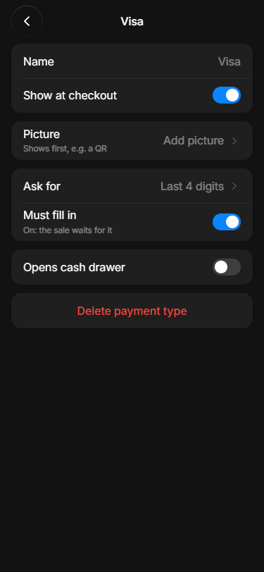
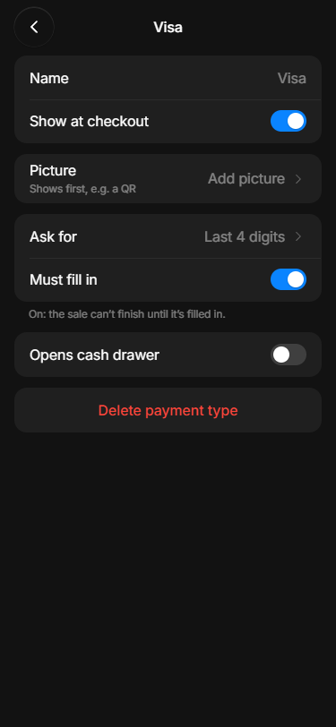
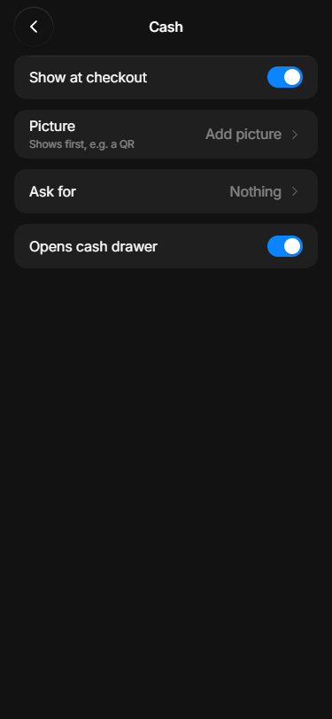
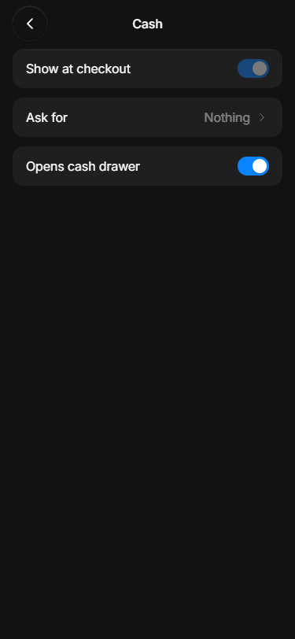
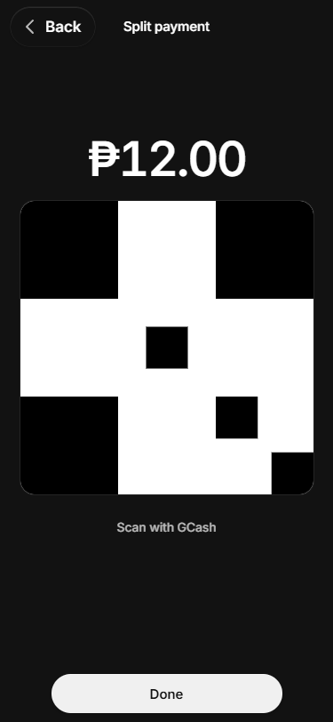
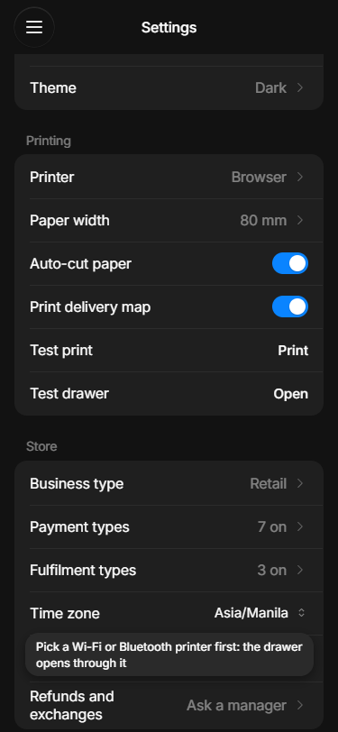
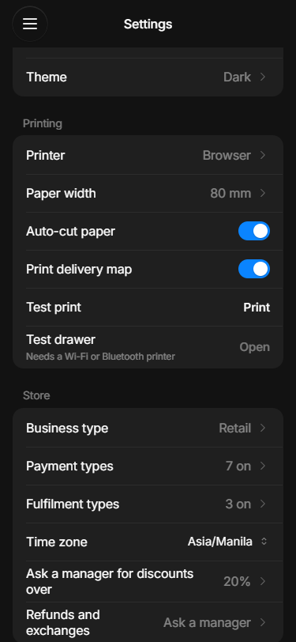
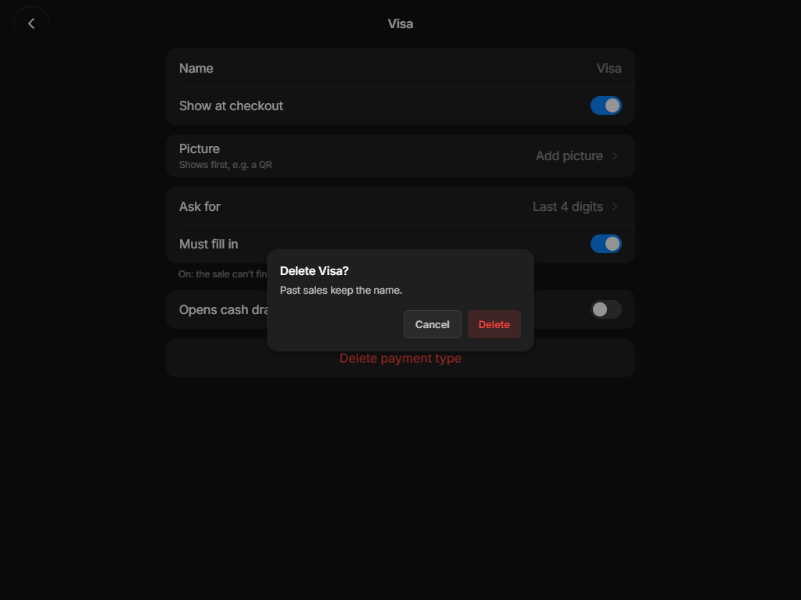
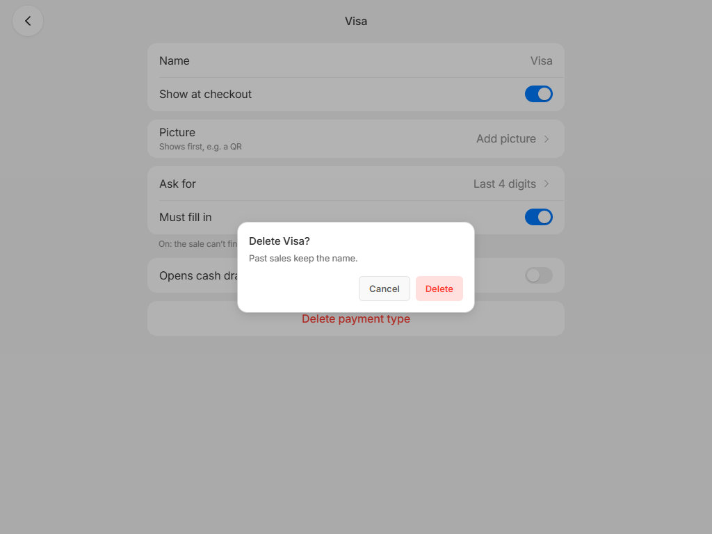

Where the testers got stuck
Before is the lab app as the testers saw it. After is the lab app now, built (2026-10-23). Tap a picture to open it full size.
Settings › Payment types › Visa
Testers: “On: the sale waits for it” is unclear. After: the note moves under the card and says “On: the sale can't finish until it's filled in.”


Checkout › Visa
Testers: Complete sale is grey with no reason, and the box looks like an optional one. After: the box says “(required)”, the button says what's missing (“Enter last 4 digits”), and tapping it says “Enter the last 4 digits first”.
Settings › Payment types › Cash
Cash is always on the checkout, so its Show at checkout switch can't be turned off. Testers tapped it and nothing happened. After: the switch is greyed, so it reads as “always on”. The Picture row is gone too: Cash goes straight to its amounts, so a picture would never show.


Checkout › Split › GCash
A GCash or QR part inside a Split now shows its QR for that part's amount. Done goes to the part's box if the type asks for something, else back to the Split page.

Settings › Printing (left for now)
The cash drawer is plugged into the receipt printer, and the POS opens it by sending the printer a signal. The Browser printer (printing through the browser's Print window) can't send that signal, so the drawer can't open. Testers tapped Test drawer, got an error, and didn't know why. After: the row says “Needs a Wi-Fi or Bluetooth printer” and Open is greyed.


Delete Visa? (iPad, dark)
Testers: the card sits over the rows with nothing dimmed. After: the screen behind dims.


Delete Visa? (iPad, light)

